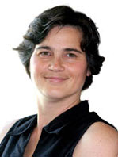

Schedule
| 8:30 - 9:00 | Breakfast |
| 9:00 - 9:10 | Opening Remarks |
| 9:10 - 10:00 | Onur Mutlu "Accelerating Genome Analysis" |
| 10:00 - 10:30 | Miquel Moreto and Santiago Marco-Sola "Accelerating the Wavefront Alignment Algorithm on CPUs, GPUs and FPGAs" |
| 10:30 - 11:00 | Elena Espinosa, Ivan Fernandez, Rafael Larrosa Jiménez and Oscar Plata
"Whole-Genome Assembly: An Experimental Study of Computational Costs and Architectural Opportunities" |
| 11:00 - 11:30 | Alireza Mohammadidoost, Kyle Smith and Yatish Turakhia
"GPU Acceleration of Pairwise Sequence Alignment Using Wavefront Skipping" |
| 11:30 - 12:00 | Damla Senol Cali, Saugata Ghose and Onur Mutlu
"Accelerating Genome Sequence Analysis via Efficient Hardware/Algorithm Co-Design" |
| 12:00 - 13:00 | Lunch |
| 13:00 - 13:50 | Tajana Šimunić Rosing
"Accelerating bioinformatics workloads" |
| 13:50 - 14:10 | Yuhao Fang, Aman Sinha and Bo-Cheng Lai
"REAL-GSM : Re-programmable Engines for Acceleration on LPDDR4x-based Stacked DRAM to support Genomic String Matching" |
| 14:15 - 14:40 | Nika Mansouri Ghiasi, Jisung Park, Harun Mustafa, Jeremie Kim, Ataberk Olgun, Arvid Gollwitzer, Damla Senol Cali, Can Firtina, Haiyu Mao, Nour Almadhoun Alserr, Rachata Ausavarungnirun, Nandita Vijaykumar, Mohammed Alser and Onur Mutlu
"GenStore: A High-Performance In-Storage Processing System for Genome Sequence Analysis" |
| 14:40 - 15:00 | Coffee break |
| 15:00 - 15:50 | Lisa Wu
[TBU] |
| 15:50 - 16:20 | Esteban Garzón, Roman Golman, Zuher Jahshan, Robert Hanhan, Natan Vinshtok-Melnik, Marco Lanuzza, Adam Teman, Leonid Yavits
"Hamming Distance vs. Edit Distance for Approximate Associative Genomic Processing" |
| 16:20 - 16:50 | Zheming Jin
"Performance Portability of Epistasis Detection using SYCL on a GPU" |
| 16:50 - 17:00 | Closing remarks |
Keynote Speakers
-

Tajana Rosing
Prof of Computer Science and Engineering, Director of System Energy Efficiency Lab, UCSD
Short Bio: Tajana Šimunić Rosing is a Full Professor, a holder of the Fratamico Endowed Chair, ACM & IEEE Fellow, and a director of System Energy Efficiency Lab at UCSD. Her research interests are in energy efficient computing, computer architecture, distributed and embedded systems. She is leading a number of projects, including efforts funded by DARPA/SRC JUMP CRISP program, with focus on design of accelerators for analysis of big data including machine learning, image/video processing and bioinformatics; DARPA, NSF and SRC funded projects on Hyperdimensional Computing, SRC funded project acceleration of 3rd generation Fully Homomorphic Encryption, and NSF AI TILOS center projects on federated learning and AI-based chip design. She recently headed the effort on SmartCities that was a part of DARPA and industry funded TerraSwarm center. Tajana led the energy efficient datacenters theme in MuSyC center, and a number of large projects funded by both industry and government focused on power and thermal management. From 1998 until 2005 she was a full time research scientist at HP Labs while also leading research efforts at Stanford University. She finished her PhD in EE in 2001 at Stanford, concurrently with finishing her Masters in Engineering Management. Her PhD topic was dynamic management of power consumption. Prior to pursuing the PhD, she worked as a senior design engineer at Intel Corporation.
-

Onur Mutlu
Prof of Computer Science, Zurich ETH and CMU
Short Bio: Onur Mutlu is a Professor of Computer Science at ETH Zurich. He is also a faculty member at Carnegie Mellon University, where he previously held the Strecker Early Career Professorship. His current broader research interests are in computer architecture, systems, hardware security, and bioinformatics. A variety of techniques he, along with his group and collaborators, has invented over the years have influenced industry and have been employed in commercial microprocessors and memory/storage systems. He obtained his PhD and MS in ECE from the University of Texas at Austin and BS degrees in Computer Engineering and Psychology from the University of Michigan, Ann Arbor. He started the Computer Architecture Group at Microsoft Research (2006-2009), and held various product and research positions at Intel Corporation, Advanced Micro Devices, VMware, and Google. He received the Intel Outstanding Researcher Award, IEEE High Performance Computer Architecture Test of Time Award, the IEEE Computer Society Edward J. McCluskey Technical Achievement Award, ACM SIGARCH Maurice Wilkes Award, the inaugural IEEE Computer Society Young Computer Architect Award, the inaugural Intel Early Career Faculty Award, US National Science Foundation CAREER Award, Carnegie Mellon University Ladd Research Award, faculty partnership awards from various companies, and a healthy number of best paper or "Top Pick" paper recognitions at various computer systems, architecture, and security venues. He is an ACM Fellow "for contributions to computer architecture research, especially in memory systems", IEEE Fellow for "contributions to computer architecture research and practice", and an elected member of the Academy of Europe (Academia Europaea). His computer architecture and digital logic design course lectures and materials are freely available on YouTube, and his research group makes a wide variety of software and hardware artifacts freely available online https://safari.ethz.ch/. For more information, please see his webpage at https://people.inf.ethz.ch/omutlu/.
-
Lisa Wills
Assistant Professor of Computer Science, Duke
Short Bio: [TBU]
Workshop Organizers
Leonid Yavits
Bar Ilan University
Short bio: Leonid Yavits is with Bar Ilan University, Israel. He received his MSc and PhD in Electrical Engineering from the Technion. After graduating, he co-founded VisionTech where he co-designed the world’s first single chip MPEG2 codec. Following VisionTech’s acquisition by Broadcom, he managed Broadcom Israel R&D and co-developed a number of video compression products. Later Leonid co-founded Horizon Semiconductors where he co-designed a Set Top Box-on-chip for cable and satellite TV. Leonid’s research interests include non von Neumann computer architectures, processing in memory, and domain specific accelerators. Leonid's research work has earned several awards; among them: IEEE Computer Architecture Letter Journal Best Paper Awards for 2015 and 2017 and best poster award at ICS High Performance Conference 2017.

Yatish Turakhia
UCSD
Short bio: Yatish Turakhia is assistant professor of Electrical and Computer Engineering (ECE) at UCSD. He was previously a postdoctoral scholar at the Genomics Institute at UC Santa Cruz and received his PhD student in from Stanford University. His work has been conferred with the best paper award at ASPLOS, IEEE Micro Top picks and NVIDIA graduate fellowship.